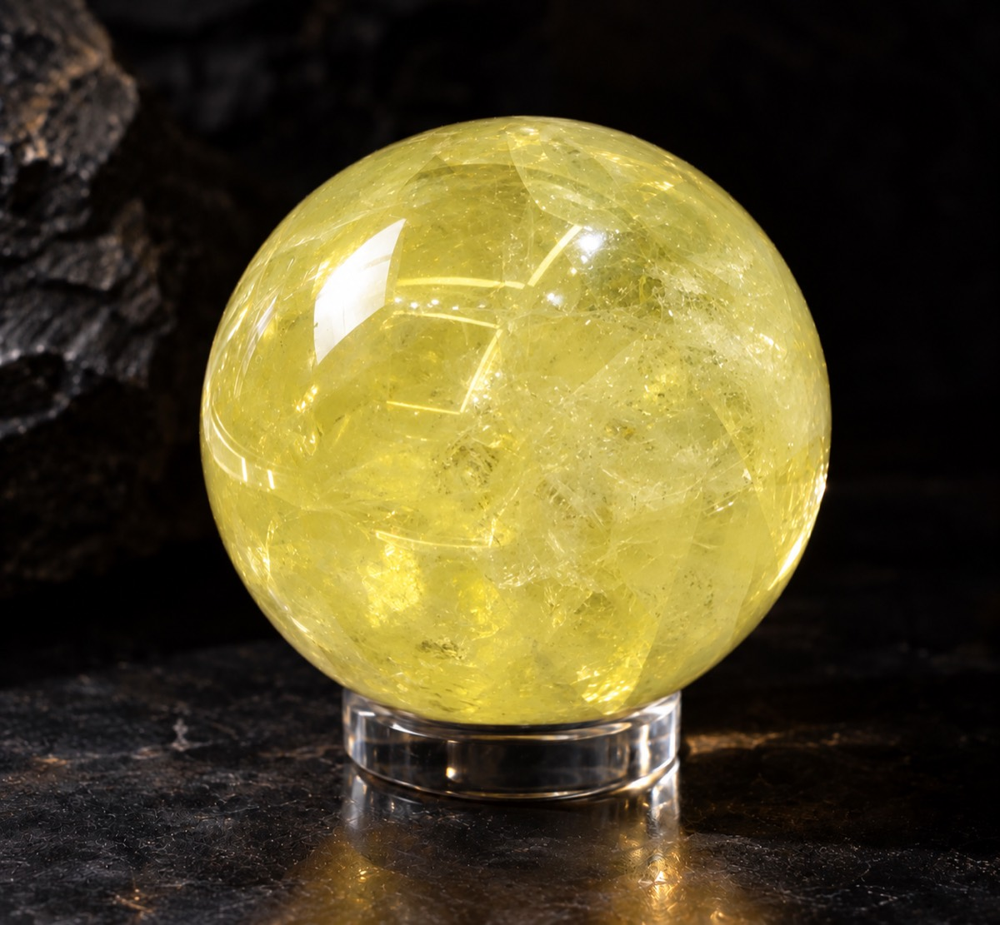

THANK YOU
お迎えくださった、
あなたへ
写真はイメージです。天然石のため、色味・形は1つ1つ異なります。
みづきです。
このたびは、実りのシトリンをお迎えくださり、ありがとうございます。
2027年の入口に、この石を選んでくださったこと。1つの石が、あなたのところへ届くことを、心からうれしく思っています。
このページは、お迎えくださった方だけにお渡ししている「使い方ノート」です。届くまでのこと、届いてからのこと、日々の置き方まで、順番にまとめました。
むずかしい決まりは、1つもありません。あなたの暮らしの中で、心地よい形で付き合ってあげてください。
STEP 01
届くまでのこと
ご注文のあと、STORESから注文確認のメールが届きます。届いていれば、受付は完了しています。
発送は、ご注文確定後1か月以内に、順に行います。発送したときは、公式LINEでもお知らせします。
届くまでのあいだに、1つだけお願いがあります。
石の置き場所を、先に決めておいてください。
玄関の棚、窓辺、枕元、いつも使う机の上。毎日目に入って、あなたがほっとできる場所が、いちばんです。
STEP 02
届いたら、最初にすること
箱を開けたら、まず、利き手ではないほうの手のひらに、そっと乗せてみてください。
そして、ひと呼吸。
何も感じなくても、大丈夫です。石とあなたの時間は、人それぞれ。焦る必要はありません。
届いたとき、よろしければ公式LINEで「届きました」とだけ教えてください。私がうれしくなります。
STEP 03
願いの込め方
LINEでお預かりした、2027年の願い。あの願いを、石にも1度、伝えてあげてください。
- 夜でも朝でも、ひとりになれる静かな時間を選びます。
- 石を両手で包んで、ゆっくり3回、呼吸します。
- 願いを、小さな声で1度だけ。声に出すのが恥ずかしければ、心の中で大丈夫です。
- 最後に「今年もよろしくね」と添えて、置き場所にそっと戻します。
うまく言えなくて大丈夫です。「穏やかな1年にしたい」くらいのひとことで、じゅうぶんです。
何度も繰り返さなくても構いません。伝えたら、あとは日々そばに置いておくだけです。

写真はイメージです。
最初の7日間の過ごし方
1日目 手のひらに乗せて、ひと呼吸。置き場所に、そっと置きます。
2〜3日目 朝、出かけるときに「いってきます」と声をかけてみてください。
4日目 手帳や携帯のメモに、いまの気持ちをひとこと残します。
5〜6日目 置き場所が心地よいか、見直してみます。変えても構いません。
7日目 この1週間で気づいた、小さなことを思い出してみてください。
小さな変化に気づいたら、ぜひ喜んであげてください。人と比べず、あなたのペースで大丈夫です。
STEP 04
日々の使い方
手首に着けても、玄関の棚や窓辺、枕元に置いても。特別な決まりはありません。
大切なのは、毎日目に入ること。シトリンは、昔から「実り」「豊かさ」の象徴として語られてきた石です。朝の「今年もよろしくね」のひとことが、1年を続けていくための印になります。
お手入れ
汚れが気になったときは、やわらかい乾いた布で、そっと拭いてあげてください。
長時間の強い直射日光や高温の場所は、色味が変わることがあるため避けてください。落としたり、ぶつけたりしないようにご注意ください。
2027年を、ともに歩くために
シトリンをお迎えしたら、2027年の暦も、手元に置いておくと心強いです。
2027年 実りの開運カレンダーを見る季節の節目には、石との過ごし方や暦のお便りを、公式LINEでお届けします。次の入荷は未定ですが、この石とのご縁は、これから1年かけてゆっくり育っていきます。
年の終わりに手帳を開いたとき、「今年はいくつか実ったな」と書ける。そんな1年になりますように。
みづき
困ったときは
わからないことがあれば、公式LINEのトークでお気軽にお知らせください。
Q. 届いたら、思っていた色味と違いました。
A. 天然石のため、色味・模様・内包物に個性があります。ご心配があればLINEでお知らせください。
Q. 到着時に破損や不備がありました。
A. 到着後7日以内に、公式LINEへご連絡ください。
Q. 変化はいつ頃から感じられますか。
A. 感じ方には個人差があります。この石は効果効能をお約束するものではなく、毎日目にする「印」としてお届けしています。
Q. 注文できたか分かりません。
A. STORESから注文確認メールが届いていれば受付済みです。届かない場合はLINEでお知らせください。
カード番号・パスワード・確認コードは、LINEには送らないでください。本品は天然石を用いたお守りです。返品・交換は、お客様のご都合ではお受けできません。詳しくはSTORESの商品ページと特定商取引法に基づく表記をご確認ください。